İzmit Incubator Center
[...An incubator where education, research, and industry converge; transforming knowledge into collaboration, experimentation, and real-world innovation...]
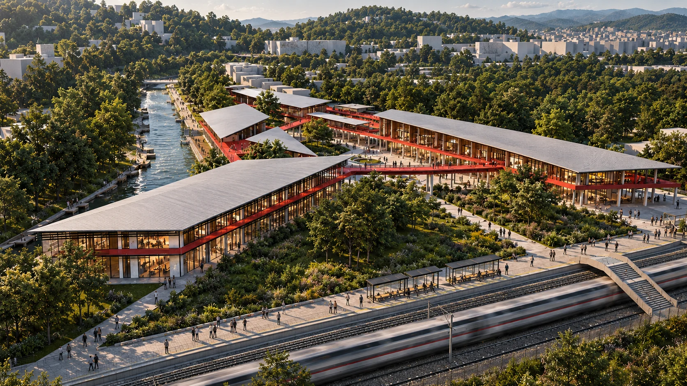
The İzmit Incubator Center is conceived as a place where education, research, production, and entrepreneurship intersect. Its location between academic institutions, industrial networks, and major transportation routes becomes a driving force in the organization of the project.
Rather than concentrating all functions within a single volume, the design is fragmented into interconnected programmatic zones that create a network of shared spaces, circulation paths, and collaborative environments. These connections encourage interaction between students, researchers, and professionals while allowing different activities to remain distinct.
The project uses movement and connectivity as spatial tools, forming an open system that supports knowledge exchange, experimentation, and the transition of ideas from academic research into industrial application.
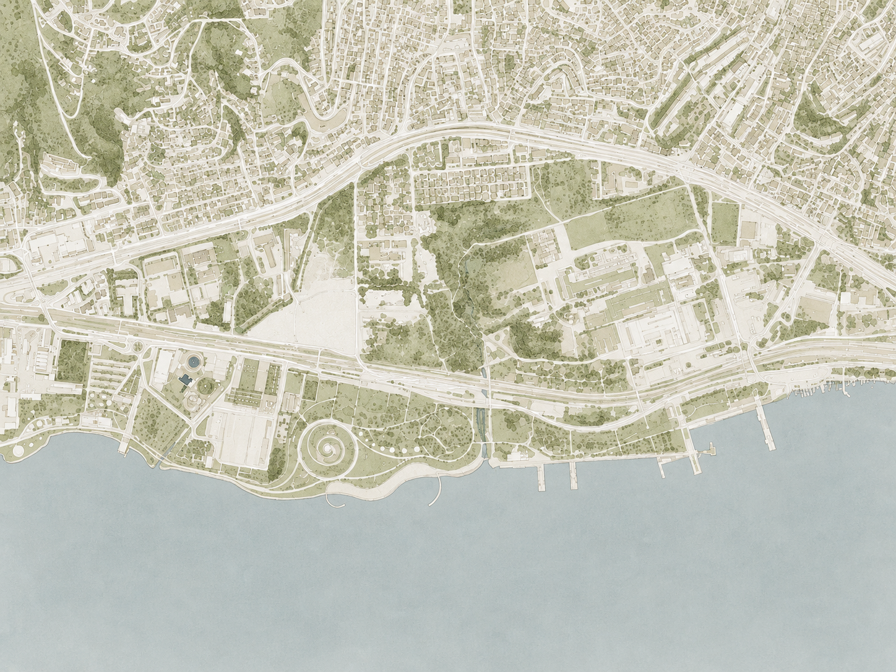
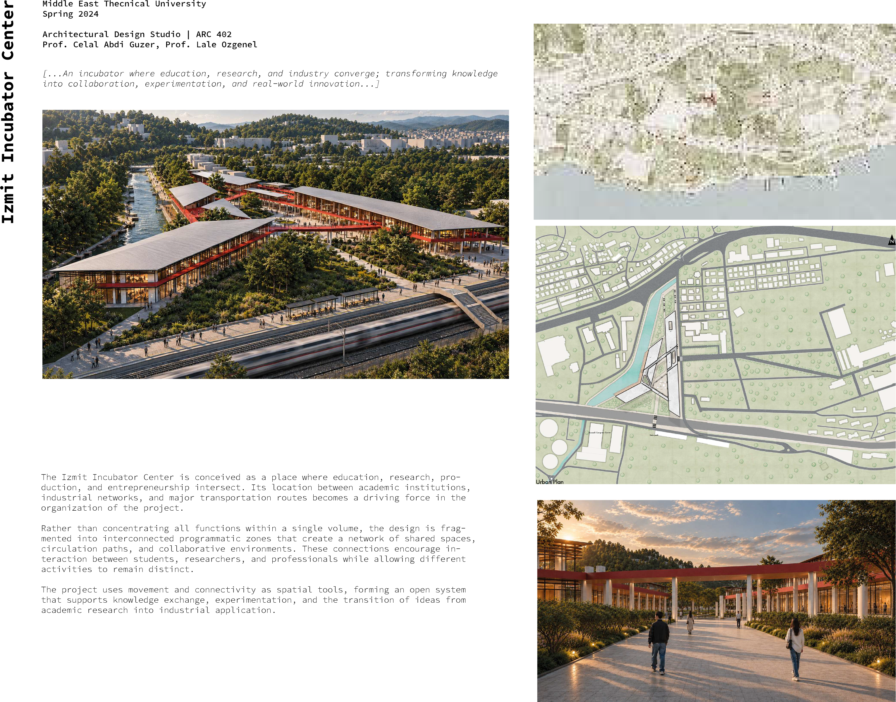
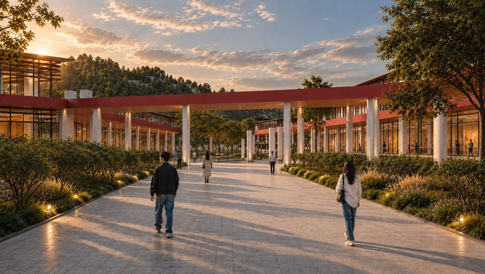
Forming Connection
The singular geometry of the project is derived from the edges and directional forces of the site. Rather than proposing an independent form, the building responds to the existing urban context and uses its geometry to establish stronger spatial connections.
At the center, an open public space acts as a hinge between the project and the surrounding city, reinforcing the relationship between the incubator, the coastline, and the existing urban fabric.
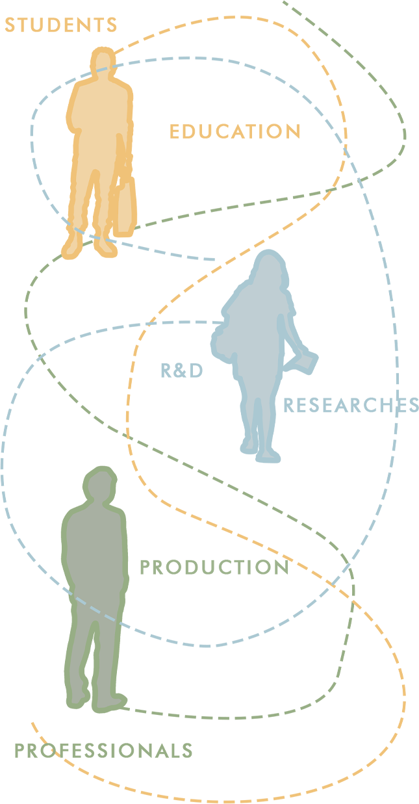
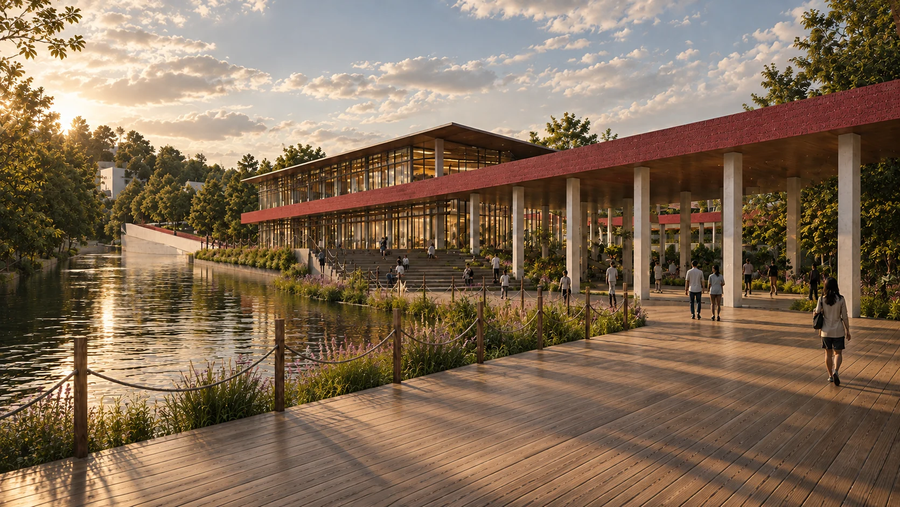
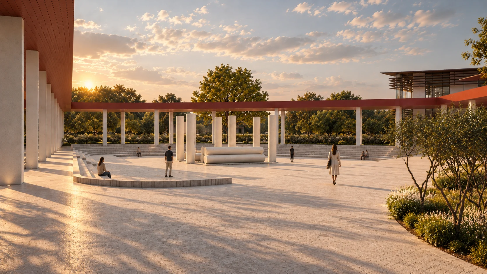
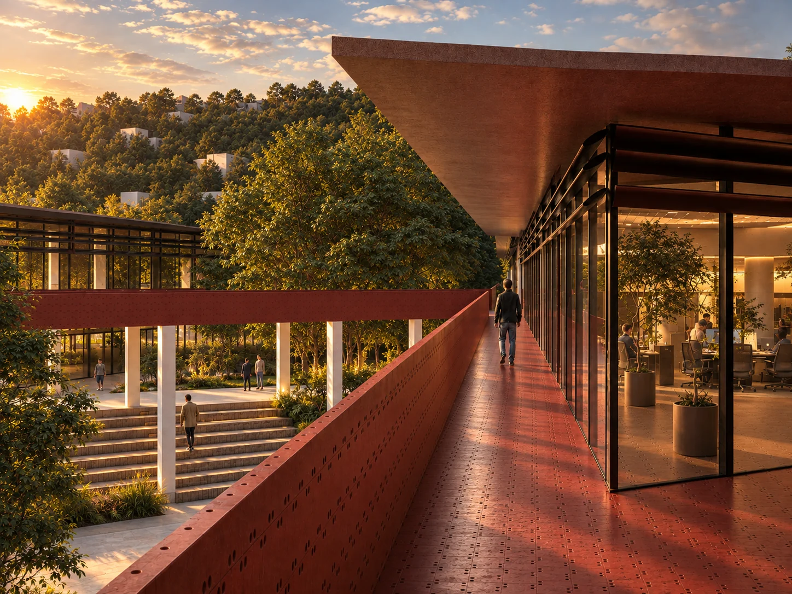
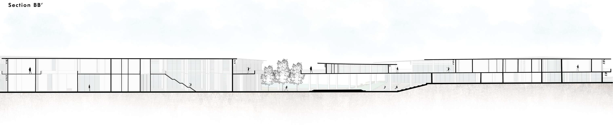
İzmit Incubator Center
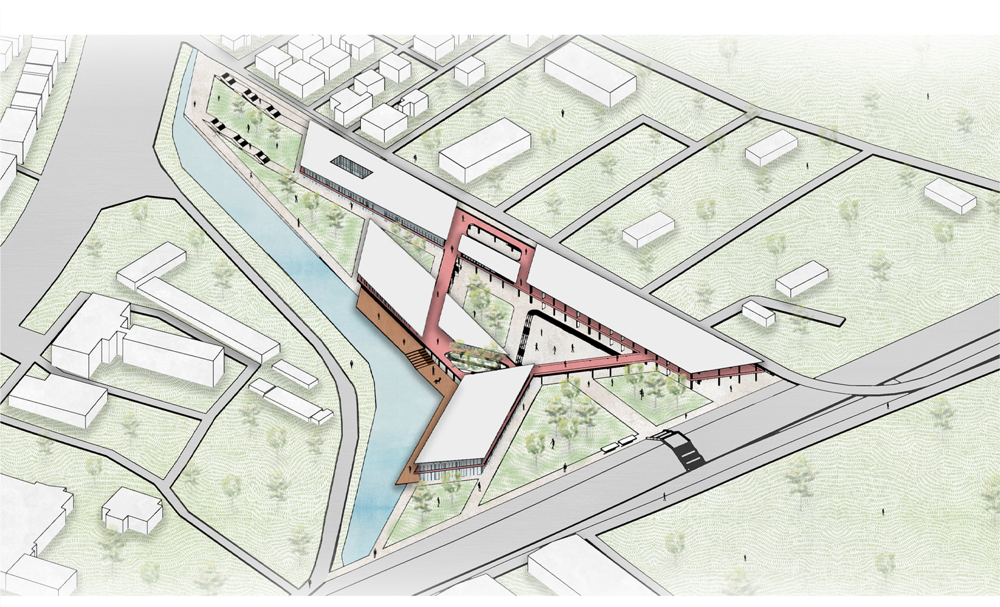
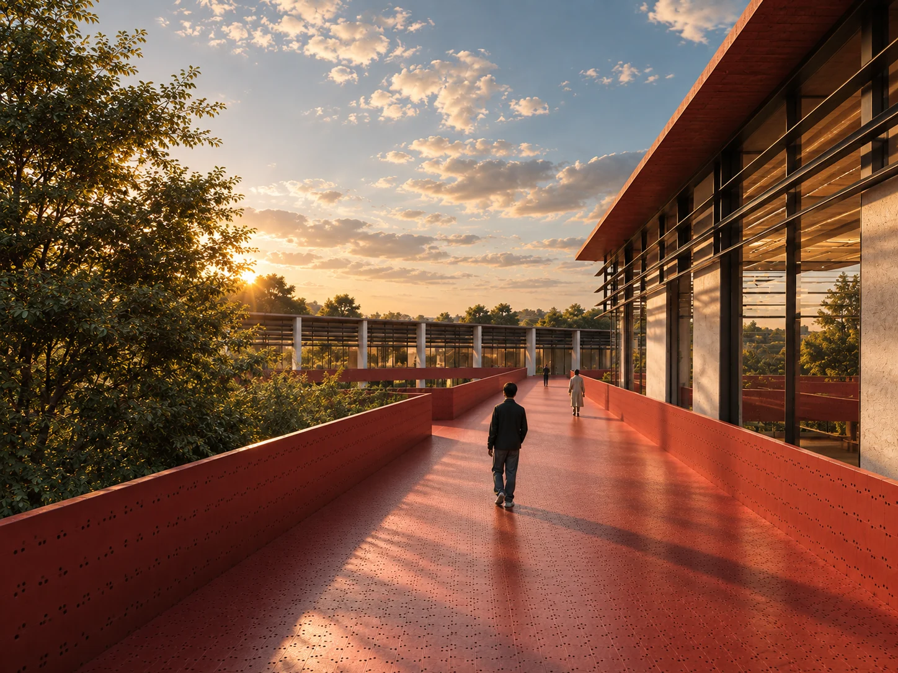
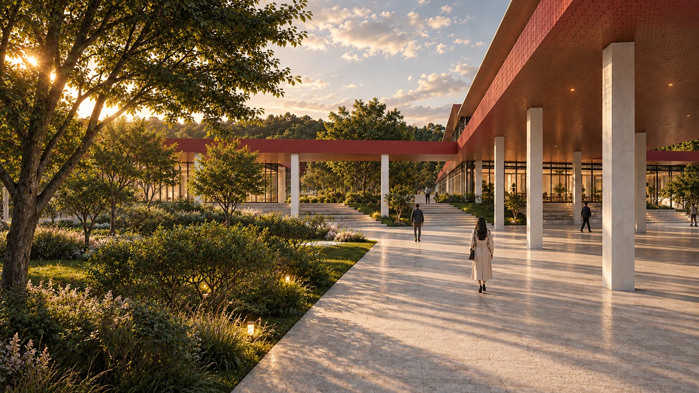
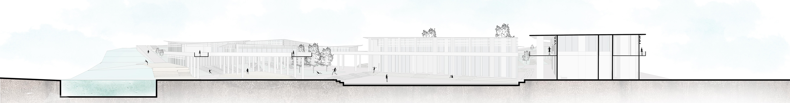
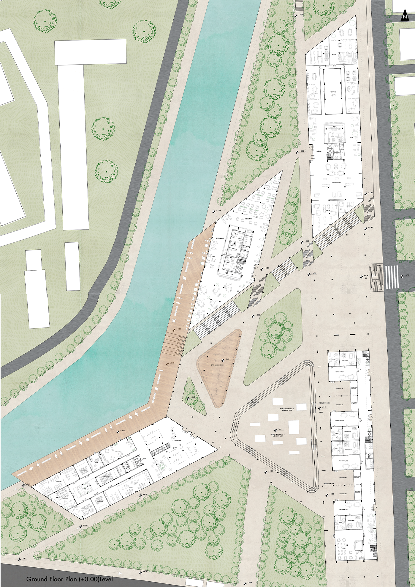
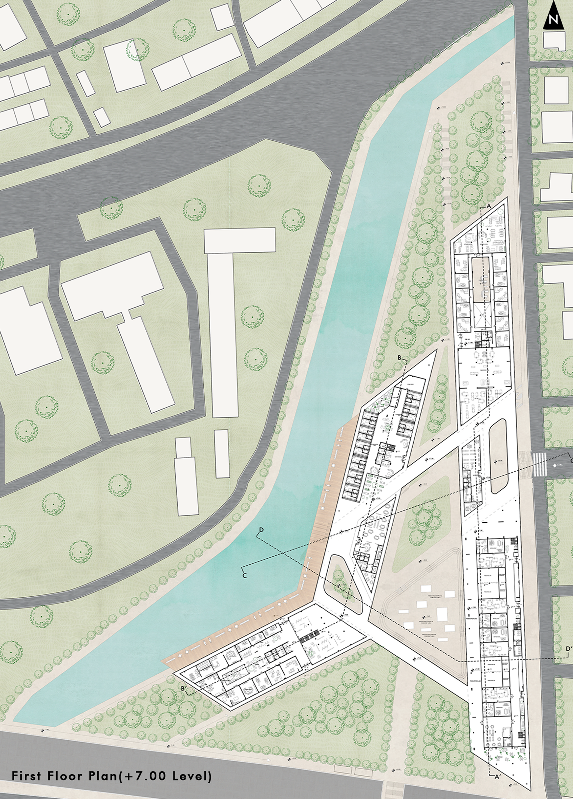